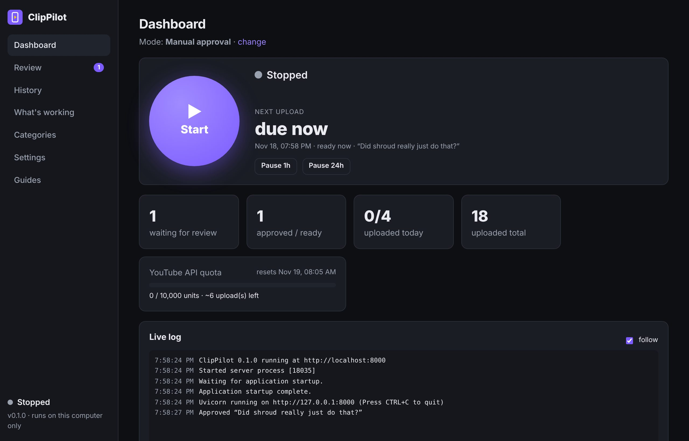
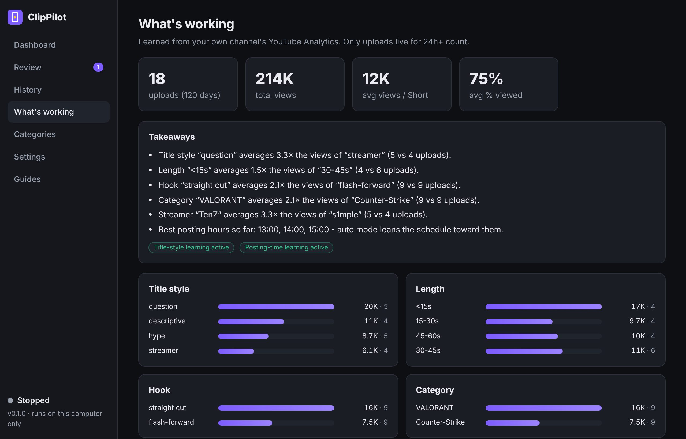

Any category
Search Twitch for Valorant, CS2, GTA, Fortnite or anything else. Each category gets its own minimum views, age window, language, daily limit, allow/blocklists and hashtags.
Free · open source · runs on your computer
ClipPilot finds the hottest clips in any Twitch category, burns in word-by-word captions, reframes them to 9:16, writes the title, credits the streamer and uploads to your YouTube channel. You approve each one, or let it run on a schedule.
No account. No subscription. No server of ours. Bring your own free Twitch and Google keys.

Search Twitch for Valorant, CS2, GTA, Fortnite or anything else. Each category gets its own minimum views, age window, language, daily limit, allow/blocklists and hashtags.
Local speech-to-text with word timestamps. Big bold captions highlight the word being spoken, stay inside the Shorts safe area, and use your font, colours and position.
Blurred-background fill, a facecam-on-top/gameplay-below split per streamer, or a centre crop. Loudness is normalised for mobile.
Dead air is trimmed, long silences are cut, the loudest moment flashes forward, and hook text shows for the first two seconds.
Manual approval by default: preview, pick a title variant, edit, approve. Auto mode follows your interval, daily cap, quiet hours and pause switch.
Tracks views and retention for every upload, favours the title styles and posting hours that perform on your channel, and spreads uploads across streamers.
Every upload names the streamer and links their channel and the original clip. Even your manual edits can't remove that.
Keys live in your OS keychain and are never logged. The dashboard only listens on your own computer. Nothing is sent to us, ever.


ClipPilot pulls views and retention from the YouTube Analytics API and tells you in plain words which title styles, lengths, categories, streamers and posting hours do best. Auto mode uses the same data to steer the next upload.
Manual approval is the default. Turning on Auto mode asks you to confirm you have permission to repost clips, and "approved streamers only" is on until you turn it off. Uploads are rate-limited to avoid spam flags.
Unzip and run. ffmpeg is included. The dashboard opens at http://localhost:8000.
git clone https://github.com/ritviksajeev/clipped
cd clipped && docker compose up -d --buildpip install -e .
cd frontend && npm ci && npm run build
clippilot serveThe builds aren't code-signed. On Windows choose More info → Run anyway; on macOS right-click → Open the first time. All releases
Yes. ClipPilot is MIT-licensed, the Twitch and YouTube APIs are free, and transcription runs on your computer. AI-written titles are optional and billed by your own Anthropic or OpenAI account. The free templates work without them.
YouTube locks uploads from API projects that haven't passed its free compliance audit to private. ClipPilot detects this and links the audit form. Until then you can switch videos to Public in YouTube Studio. Details
A new Google Cloud project gets 10,000 API units a day, which is about 6 uploads. ClipPilot tracks the quota, stops before it runs out, and resumes after the daily reset.
No. There is no ClipPilot server. Keys are stored in your operating system's keychain and only ever sent to the service they belong to.
That depends on the streamer and the platforms' rules, and it's your responsibility. ClipPilot always credits the streamer, defaults to manual approval, supports an approved-streamers list, and lets you add commentary and intros so your Shorts are more than reposts. Read the safety guide